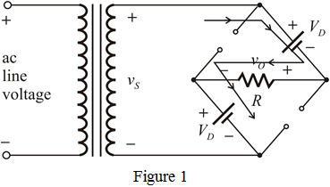

Apply Kirchhoff’s Voltage Law to the circuit.
The ac line voltage is 
Thus, the primary voltage is,
The average output voltage when is,
Refer to Figure 4.23 in the textbook for the bridge rectifier circuit.
In this bridge rectifier, two diodes either or conduct at any time.
During the positive half cycle of the input, the diodes are on and the diodes are off. During the negative half cycle of the input, the diodes are on and the diodes are off. The diodes which are conducting are replaced with their constant-voltage-drop diode model.
Consider the circuit for positive half cycle.

Apply Kirchhoff’s Voltage Law to the circuit.
The ac line voltage is
Thus, the primary voltage is,
The average output voltage when is,
(a)
The average output voltage is
The average output voltage is,
Substitute 10 V for  to calculate the value of
to calculate the value of  .
.
Write the formula for the turns ratio of the transformer.

Substitute  for and for
for and for  .
.
Therefore, the required turns ratio for the transformer is .
The average output voltage is,
The average output voltage is,
Substitute 100 V for  to calculate the value of
to calculate the value of  .
.
Write the formula for the turns ratio of the transformer.
Substitute for  and for
and for  .
.
Therefore, the required turns ratio of the transformer is .